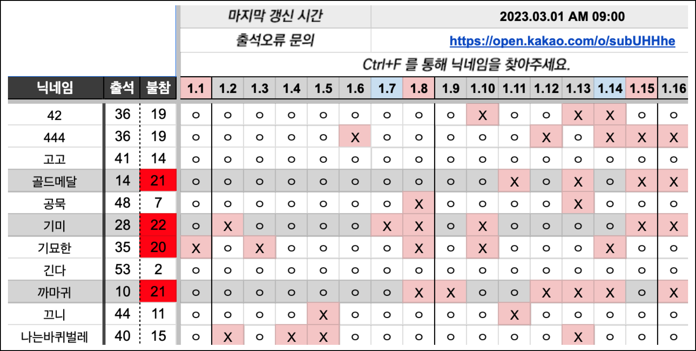
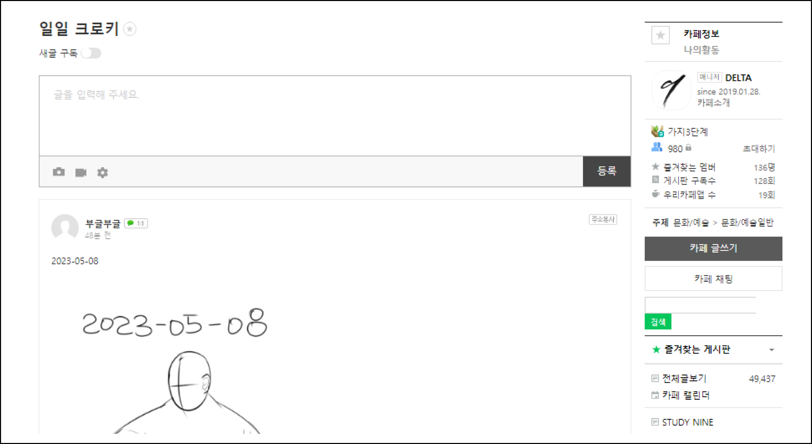
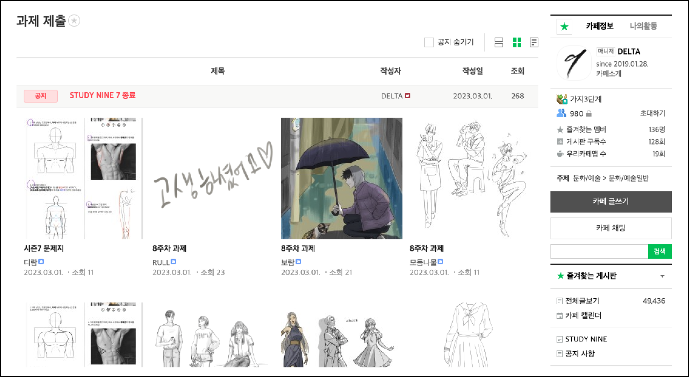

STUDY NINE은 1일 1회 이상 운영진이 수동으로 출석을 체크합니다.
모두가 확인할 수 있는 Google 스프레드시트를 이용하므로,
마지막 갱신 시간을 참고하여
본인의 출석표를 확인 후 오류가 없는지 틈틈히 점검해 주시면 됩니다.
O 출석 X 불참

일일 크로키
채색 단계는 디지털 페인팅을
중심으로 진행되오나,
크로키와 드로잉 등 선으로
이루어지는 모든 과제는 종이에 그리신 후 카메라로 촬영한
사진을 업로드 해주셔도
괜찮습니다.

과제 제출
하루 일정의 마감시간은 다음날 AM 9:00으로,
크로키와 과제 제출 시간이
지나기 전에 각 게시판에 알맞은 스터디 내역을 업로드 해주시면 됩니다.
ex. 12/28 AM8:00에 과제를 업로드 하실 경우, 12/27 과제로 등록됩니다.

불참 관련
스터디나인 시즌7은 별도의 불참 사유란이 존재하지 않습니다.
일일크로키 또는 주간과제 제출이 불가능할 경우, 별도의 안내 없이 불참하셔도 괜찮습니다.
단, 자동적으로 불참 횟수가 1회 누적됩니다.
불참 횟수가 총 20회를 초과하는 경우 즉시 스터디 그룹에서 활동정지됩니다.
일정/건강상의 이유 등 피치못할 사정으로 장기 휴일이 필요하시거나,
스터디를 진행하였음에도 네이버 카페 또는 전자기기 문제로 크로키와 과제를 제출하지 못하였을 경우,
운영진에게 1:1 문의를 보내주시면 출석을 도와드리겠습니다.